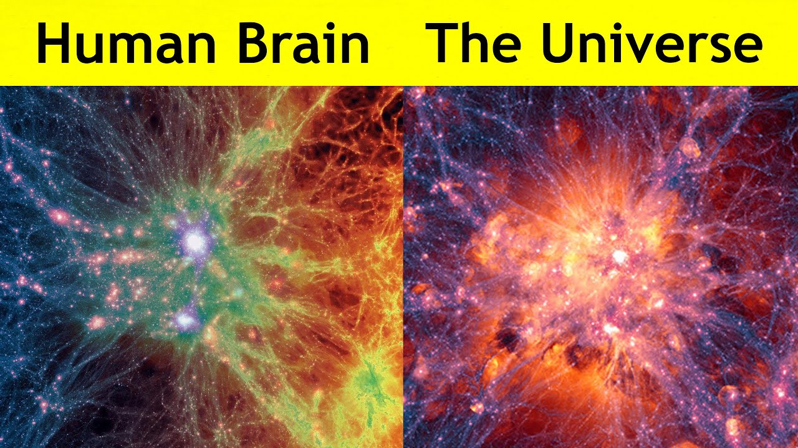

Continuing from previous blogs:
We have observed where the Rishi who gets enlightened through self inquiry with a true inherent desire to meet the Showman; they would like to come forward to share the similar experience to his few selected disciples; and thus ‘the Rishi’ becomes ‘the Guru’. Who have created a way for each and everyone of us (In terms of Personal God) to get us liberated and realize the Showman within ourselves. And then we learnt that people who embark a travel to meet the showman are termed as ‘Brahmacharya’; To get motivated to meet the showman they start to pray the Sun who is more visible and tangible; and then continue their path for the ultimate showman.
Rishis Disciple is now in a confusion mode asking about the inner light dualities among the people and again got into confusion when he envisaged that his realization to showman has to be Sacrificed to realize him. His question of “why pooja” made him to realize that it should not be a ritual but a method to concentrate to realize the god. Whatever work we do, if we perform as per direction of showman we will attain peace and not thinking about the reward and living out of vicious loop of Gunas.
Now Shishya is trying to learn about the pains and its conflicts. And has learnt that the conflict is his past image with respect to the present. Also, the conflict will be no more only when one tries to understand the conflict.
We left the previous blog with this question.
Shishya started to ponder to what Guruji said and in few minutes he asks, ” If I just live around these conflicts and try to understand them, when can I reach an ultimate bliss situation and realize the showman. I doubt is there a showman in reality ? ”
And then Rishi/Guru responds in this way:
” Who has created these conflicts? ” asks Guruji.
Shishya, instead of reacting instantly, thinks calmly for a few seconds and responds, ” As you said Guruji, conflicts are created in our mind to our past. So, conflict is our creation. ”
” If you want to enjoy the conflict! what do you have to do? ”
” Guruji, that is an absurd question. How can one enjoy the conflict? ”
” You are not thinking Shishya. Give it a thought you have the answer. ”
Shishya closes his eyes for a minute; and he opens his eyes as if he got enlightened and responds, ” As you have said Guruji, conflict can be reduced when we try to understand the conflict. However, to enjoy the conflict we have to come above the conflict and start loving the process of learning the conflict ”
Guruji looks so revealed with his answers and smiles happily with a nod.
Guruji asks again, ” What makes you ponder, that is there a showman in reality or not? ”
” If there is in reality, you would be describing him and not the path to realizing him. Also, if there is one showman there would not be different religions ”
” Showman or truth is the same ”
” I could not comprehend your context, Guruji ”
” Our goal for showman is to reach a state of ultimate bliss, which in itself is the highest truth ” responds Guruji while sipping water
and continues, ” Truth remains the same. However, the path to understanding the truth might differ. I teach you my paths and others teach theirs. ”
” But why does it take so many years for your disciples to realize the truth ? ” asks Shishya instantly
” If they follow my path, they will understand my truth but not theirs’ ” responds Guruji with a calm and pleasant smile.
Shishya closes his eyes and goes into deep thinking and asks, ” Dhanyotsmi Gurudeva, I understand the starting point of the truth. If I have realized the showman, I have to come above the paths that you mentioned and create my path for him ”
Guruji nods his head and says, ” A while ago, when I have said to rethink on conflict. Instead of giving up you thought and responded and which is better than my answer. Remember, the entire cosmic is your brain. You have to make it light to make the best use for your happiness ”
After a while, shishya asks, ” What do I have to do after I realize the truth ”
This time Guruji replies, ” You stay with the truth ” instantaneously.
” I understand that Guruji, but what work should I do by staying with the truth for life long other than staying in bliss. Of course, which is our ultimate goal. I mean after reaching the goal what should I do for the rest of my life. ”
— Answer in next blog
Glossary:
Universe is in your brain

______________________________________________________________________________________________________________
My previous blogs for reference -
https://arunkoundinya.github.io/CanvassAndAnalyze/posts/learnings-indian-culture/
https://arunkoundinya.github.io/CanvassAndAnalyze/posts/IndianCultureLearning101/
https://arunkoundinya.github.io/CanvassAndAnalyze/posts/IndianCultureLearning102/
https://arunkoundinya.github.io/CanvassAndAnalyze/posts/IndianCultureLearning103/
https://arunkoundinya.github.io/CanvassAndAnalyze/posts/IndianCultureLearning104/
https://arunkoundinya.github.io/CanvassAndAnalyze/posts/IndianCultureLearning105/
https://arunkoundinya.github.io/CanvassAndAnalyze/posts/IndianCultureLearning106/
https://arunkoundinya.github.io/CanvassAndAnalyze/posts/IndianCultureLearning107/
https://arunkoundinya.github.io/CanvassAndAnalyze/posts/IndianCultureLearning108/
https://arunkoundinya.github.io/CanvassAndAnalyze/posts/IndianCultureLearning109/
https://arunkoundinya.github.io/CanvassAndAnalyze/posts/IndianCultureLearning110/
https://arunkoundinya.github.io/CanvassAndAnalyze/posts/IndianCultureLearning111/
https://arunkoundinya.github.io/CanvassAndAnalyze/posts/IndianCultureLearning112/
https://arunkoundinya.github.io/CanvassAndAnalyze/posts/IndianCultureLearning113/
https://arunkoundinya.github.io/CanvassAndAnalyze/posts/IndianCultureLearning114/
https://arunkoundinya.github.io/CanvassAndAnalyze/posts/IndianCultureLearning115/
https://arunkoundinya.github.io/CanvassAndAnalyze/posts/IndianCultureLearning116/
https://arunkoundinya.github.io/CanvassAndAnalyze/posts/IndianCultureLearning117/
https://arunkoundinya.github.io/CanvassAndAnalyze/posts/IndianCultureLearning118/
https://arunkoundinya.github.io/CanvassAndAnalyze/posts/IndianCultureLearning119/
https://arunkoundinya.github.io/CanvassAndAnalyze/posts/IndianCultureLearning120/